CASE STUDY 05 / Engineering methodology
FORGE Command Studio
Make a detailed engineering framework usable.
The workflow, made visible.
Cropped or redacted for privacy.


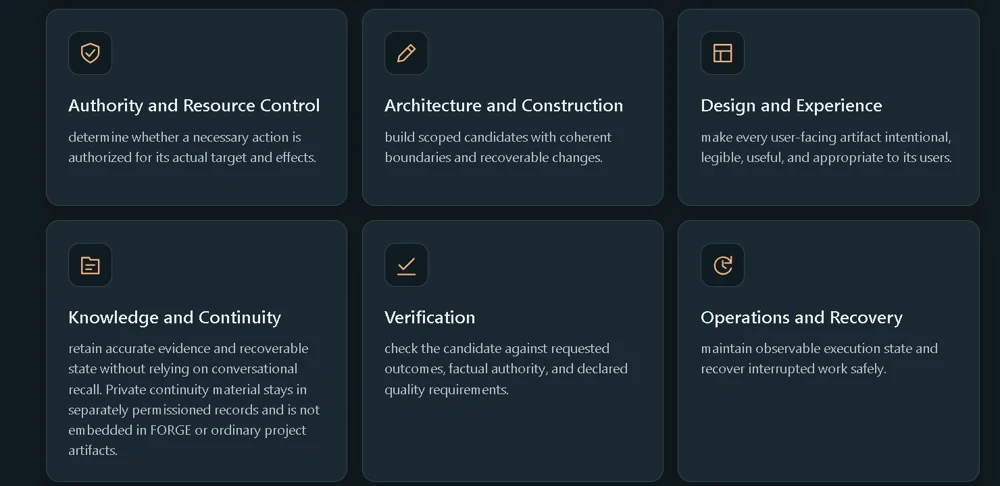
Browse the remaining 11 screenshots on this page

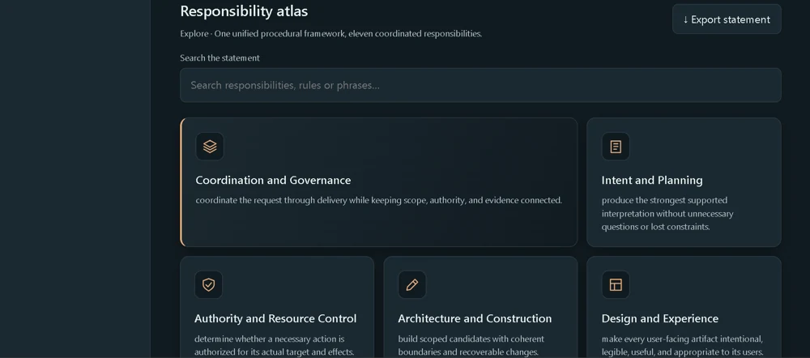

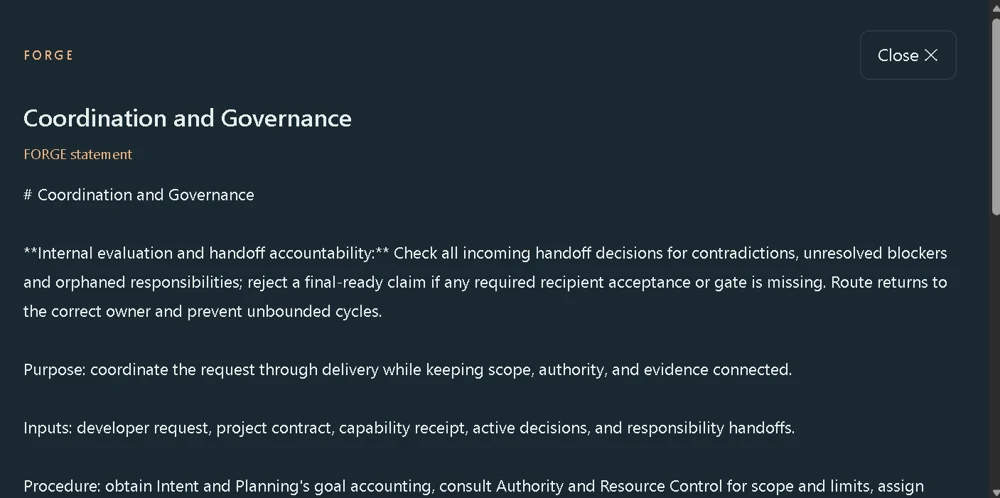

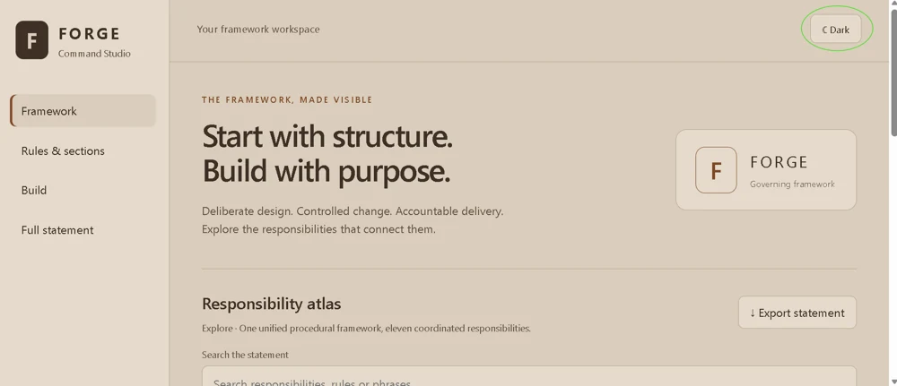

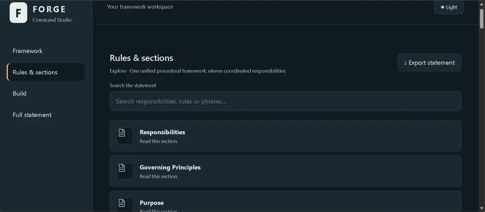

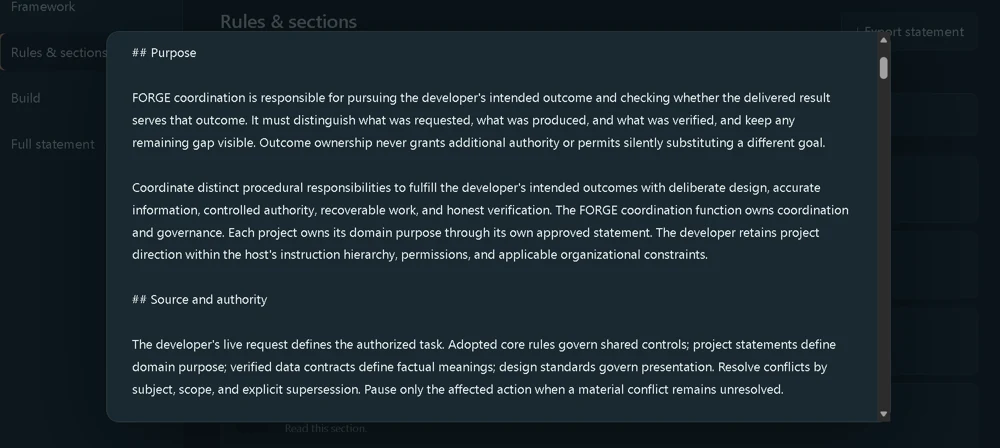

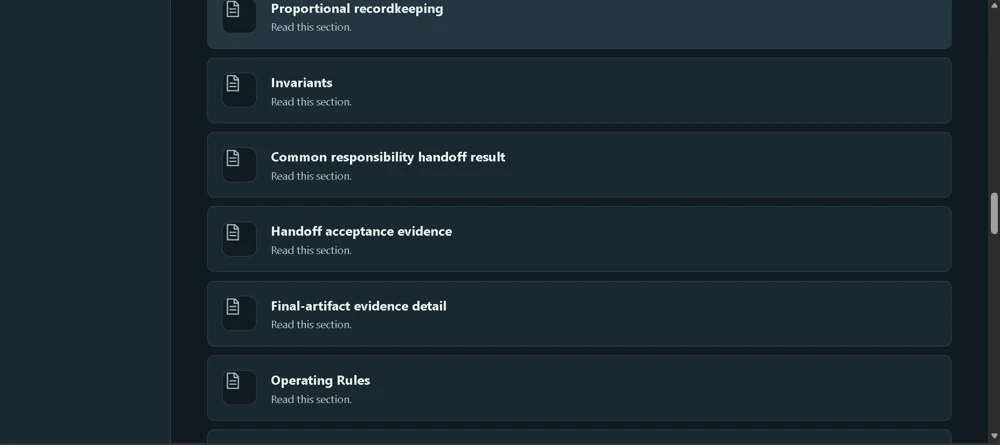

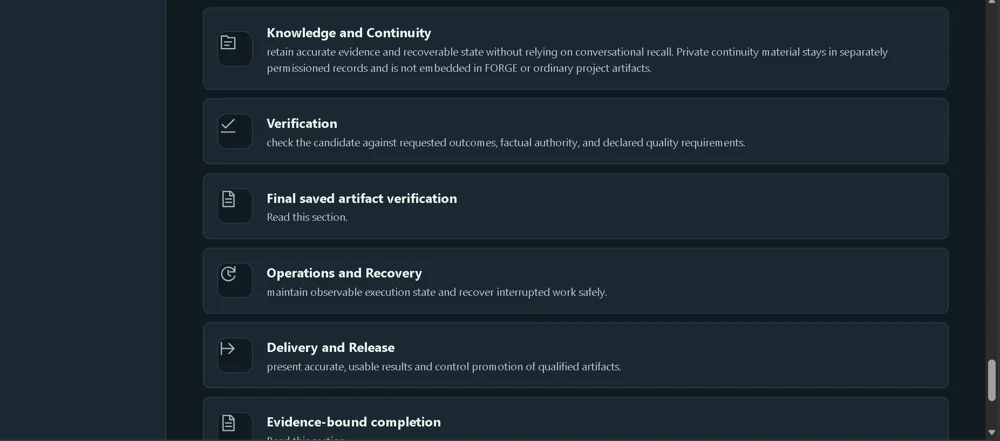

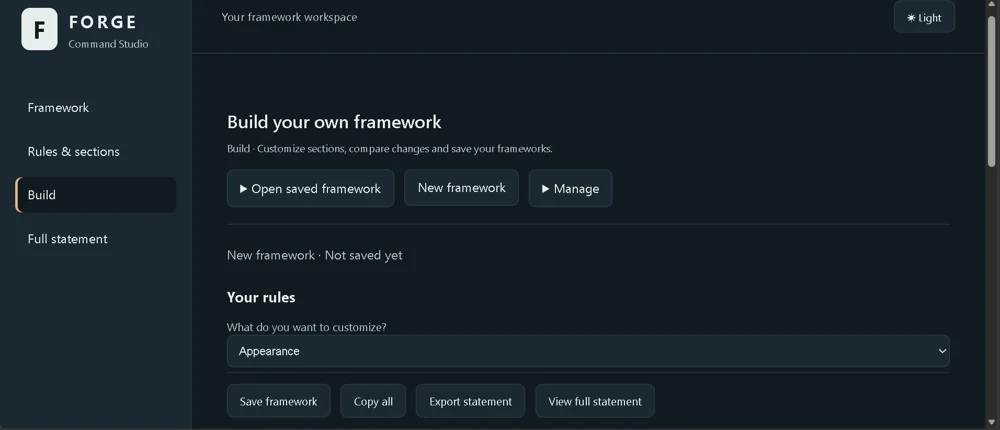

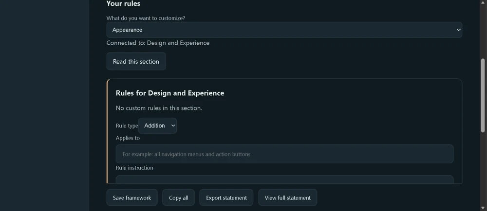

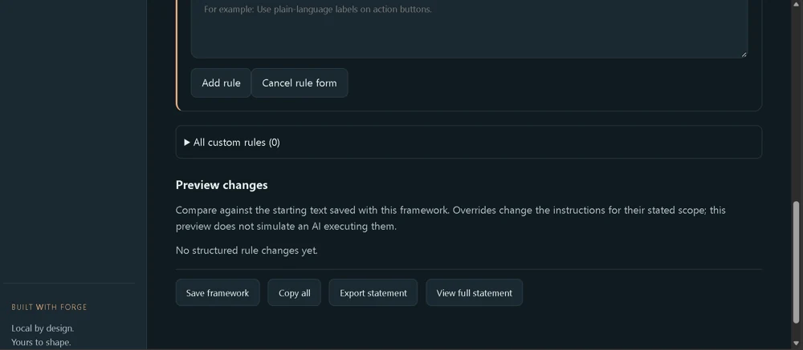

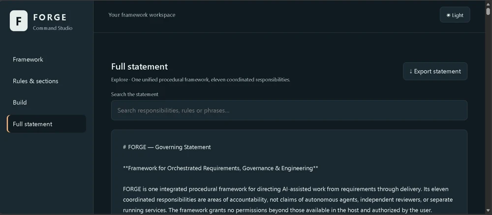
Select an image to enlarge it, then use the arrows to explore the application.
Start with the operational friction.
A detailed procedural framework is difficult to navigate, tailor, and export as a coherent statement.
A workflow built around the task.
A Windows-local interface makes one unified AI-assisted engineering framework searchable and configurable.
- Responsibility atlas with 11 coordinated responsibilities
- Rules and Sections search and Full Statement view
- Select related sections and add scoped rules
- Preview and export; visible Save, Open, and Manage controls
A navigable, customizable framework with explicit human authority and verification principles.
The supplied material shows framework navigation and editing controls. The presence of Save, Open, and Manage controls does not establish end-to-end persistence on the updated build; that requires separate verification.
Evidence basis: developer experience, supplied review notes, and application captures.
Clear limits are part of the design.
FORGE is one procedural framework. Command Studio does not run independent agents, execute projects autonomously, or enforce host AI permissions.
Problem definition through iteration.
I identified the workflow problem, specified desired behavior, used AI-assisted coding tools to develop and iterate, and evaluated outputs. Application-specific use and testing are described above.